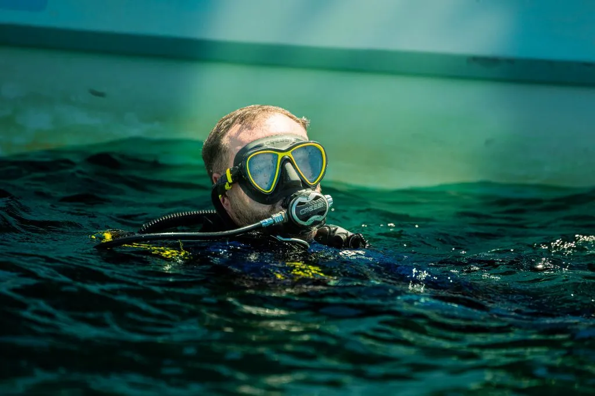
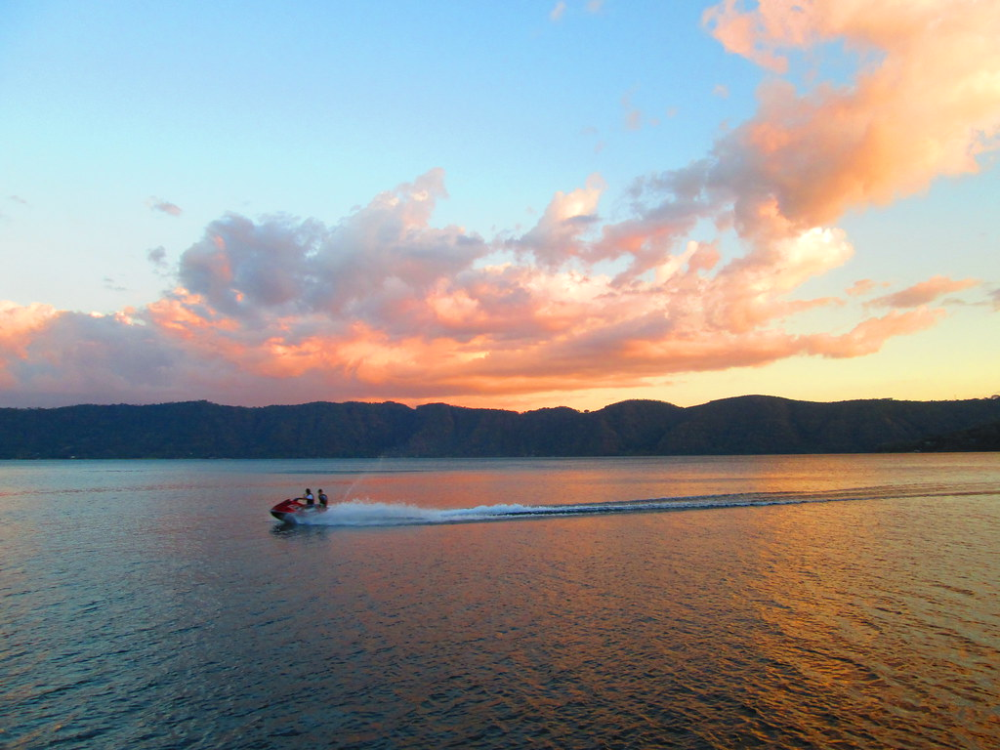

Kayak
El lago ofrece la posibilidad de realizar actividades acuáticas como el kayak, permitiendo disfrutar de sus aguas y observar desde otra perspectiva el paisaje natural que rodea al lago.
.jpeg)
El Lago de Coatepeque es un lago de origen volcánico ubicado en el departamento de Santa Ana. Sus aguas, rodeadas de montañas y abundante vegetación, forman uno de los paisajes naturales más reconocidos de El Salvador. Es un destino ideal para disfrutar de actividades acuáticas, naturaleza y hermosas vistas.
Descubre algunas de las actividades que puedes realizar durante una visita al Lago de Coatepeque.
El lago ofrece la posibilidad de realizar actividades acuáticas como el kayak, permitiendo disfrutar de sus aguas y observar desde otra perspectiva el paisaje natural que rodea al lago.

Los recorridos en lancha permiten conocer diferentes zonas del lago y disfrutar de sus paisajes. También ofrecen una forma diferente de apreciar las montañas y vegetación que rodean el agua.

El Lago de Coatepeque es conocido por ofrecer diferentes actividades acuáticas, entre ellas el buceo. También se pueden practicar otras actividades como pesca y paseos en el agua.
Disfruta de la gastronomía, los paisajes y diferentes espacios turísticos ubicados alrededor del lago.

En los alrededores del Lago de Coatepeque existen diferentes restaurantes donde puedes disfrutar de alimentos y bebidas mientras observas el paisaje.
Ubicación:
Lago de Coatepeque, Santa Ana.
Recomendación:
Consulta los horarios directamente con
cada establecimiento.

Los alrededores del lago ofrecen diferentes puntos para disfrutar de las vistas panorámicas, observar el paisaje y tomar fotografías.
Ideal para:
Fotografías y descanso.
Consejo:
Visitar los miradores y espacios con
vista hacia el lago.

Los alrededores del lago permiten disfrutar de la naturaleza y realizar actividades como senderismo y bicicleta de montaña, mientras se observan las vistas panorámicas de la zona.
Actividad:
Ecoturismo.
Recomendación:
Respetar la naturaleza y mantener limpio
el entorno.
Elige una tour operadora, un guía o el transporte, indica la fecha y el número de personas, y agrega tu reserva al carrito.
Recorrido en lancha por distintas zonas del lago para apreciar las montañas y la vegetación que lo rodean.
$20 por persona
Salida en kayak con equipo incluido para disfrutar del lago y del atardecer desde el agua.
$25 por persona
Inmersión guiada con instructor y equipo incluido, pensada para quienes quieren probar el buceo.
$60 por persona
Caminata guiada por los alrededores del lago, con paradas en miradores y explicación de la naturaleza de la zona.
$25 por grupo
Ideal para visitantes extranjeros. Explicaciones en dos idiomas sobre el origen volcánico del lago y su entorno.
$40 por grupo
Te lleva a los mejores puntos para fotografiar el lago, las montañas y el atardecer.
$40 por grupo

Viaje de ida y vuelta hasta el lago, con salida por la mañana y regreso por la tarde.
$8 por persona

Vehículo para tu grupo, con conductor disponible durante tu visita al lago.
$60 por vehículo

Para excursiones escolares, familias grandes o grupos de amigos. Reserva con anticipación.
$130 por vehículo